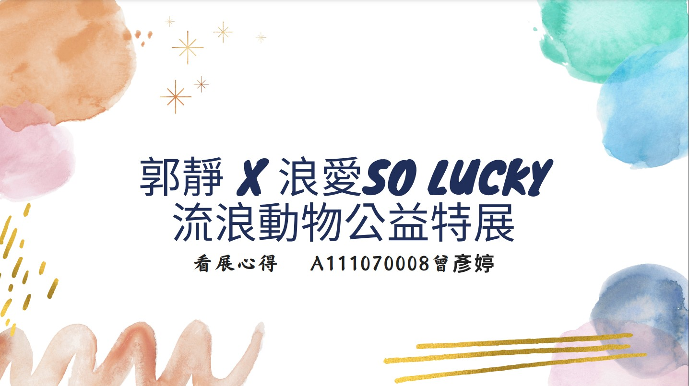

youtube直播〈人智益盡〉擔任會計，這是一部娛樂類型的直播節目，遊戲環節有猜歌、抽獎，希望歡樂的氣氛能夠感染觀眾。

課程《數位影像處理》作品，利用課堂所學，加上自己的創意，製作出有個人風格的作品。

這是我去看〈郭靜X浪愛SO LUCKY流浪動物公益展〉的看展心得。
〈Pets Are Right〉與萌寵、街頭攝影與文字相關IG帳號，我是負責發現時動態的。
擔任製片的職位，內容在講述盲人在咖啡廳遇見真命天女，讓他走出陰霾，樂觀面對生活的故事。
《郭靜So Lucky演唱會 彥婷的紀錄》利用剪輯軟體premiere製作。2022/11/12去看了郭靜的演唱會，我就選了這場演唱會當作主題並把我有錄到的歌曲而且對我比較有意義的歌剪進來。